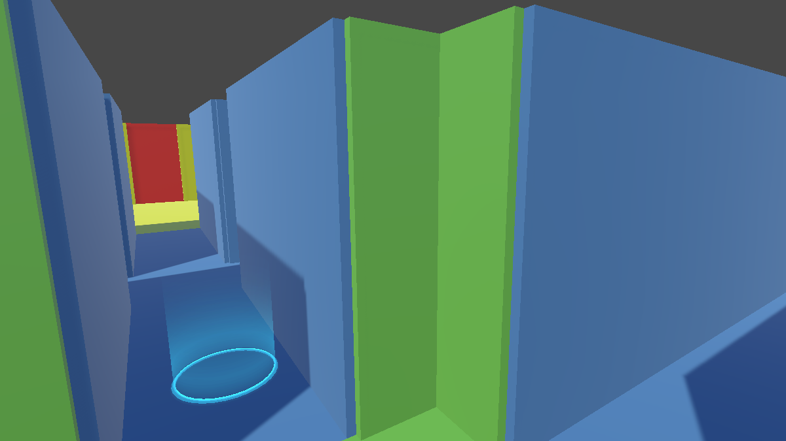
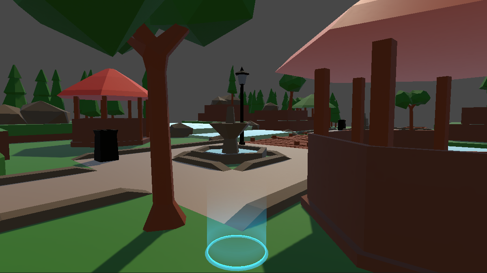
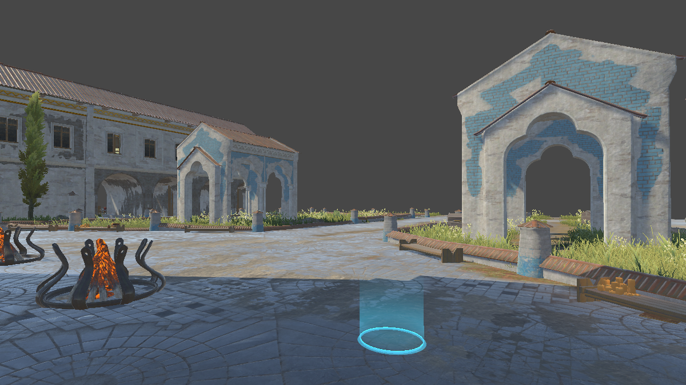

VR Locomotion Recordings
Head pose, binocular gaze, and avatar trajectory under three locomotion techniques
Data acquisition
The recordings come from an object-finding task. Participants walked continuously toward a blue marker circle; once they reached it, the circle reappeared at a random nearby location, keeping them moving for the whole session. Each participant completed a three-minute trial with every locomotion technique in every scene, preceded by a ninety-second acclimation period whenever a new technique was introduced.
Fifteen volunteers took part, aged 16 to 26 with a mean of 21.53 and a standard deviation of 2.50, seven of whom identified as female. Motion and gaze were captured with an HTC VIVE Pro Eye running at 90 Hz with VIVE SRAnipal eye tracking, and the virtual scenes were built in Unity3D 2021.3.8f1c1. Segments lost to equipment failure or cybersickness were excluded, leaving roughly 2,098,800 samples, about 96 percent of the recorded duration. A Savitzky-Golay filter of 60 frames is applied to smooth the motion streams before training.
Composition
Participants are identified by numeric folder only. No name, age, gender, or any other identifying attribute is included in the release.
Locomotion techniques
Arm-Swing— in-place arm swinging, a walking-based techniqueTouchpad— continuous joystick steering, a controller-based techniqueTeleport— discrete point-and-teleport
Virtual scenes
The three scenes differ mainly in the breadth of the field of view, which in turn shapes how participants direct their gaze while walking.



Complex in the file
names.
Archive layout
Each participant folder holds one CSV per technique and scene combination. The file name encodes
both, for example 1/SwingMazeSceneData.csv.
OpenSourceDataset/
├── Readme.txt
├── 1/
│ ├── SwingMazeSceneData.csv
│ ├── SwingParkSceneData.csv
│ ├── SwingComplexSceneData.csv
│ ├── TeleportMazeSceneData.csv
│ └── ... (9 files per complete participant)
├── 2/
│ └── ...
└── 15/Three participant folders contain fewer than nine recordings. The missing combinations are visible from the file names.
Feature schema
Every CSV has a header row and 21 columns. One row corresponds to one sampled frame.
| Column | Type | Description |
|---|---|---|
| time | float | Timestamp in seconds |
| pos_x, pos_y, pos_z | float | Head position in physical space |
| rat_w, rat_x, rat_y, rat_z | float | Head orientation as a quaternion |
| left_eye_openness | float | Left eye openness in [0, 1] |
| right_eye_openness | float | Right eye openness in [0, 1] |
| left_eye_dir_w, x, y, z | float | Left gaze direction as a quaternion |
| right_eye_dir_w, x, y, z | float | Right gaze direction as a quaternion |
| vr_pos_x, vr_pos_z | float | Avatar position on the ground plane |
| is_walking | bool | Locomotion state flag |
Download
Usage terms
The archive is provided to support review and reproduction of the results reported in the paper. Redistribution of the archive or its contents is not permitted. A formal license will be applied when the dataset is publicly released.
The recordings contain no personally identifying information. Participant identifiers are numeric and carry no link to the original consent records.